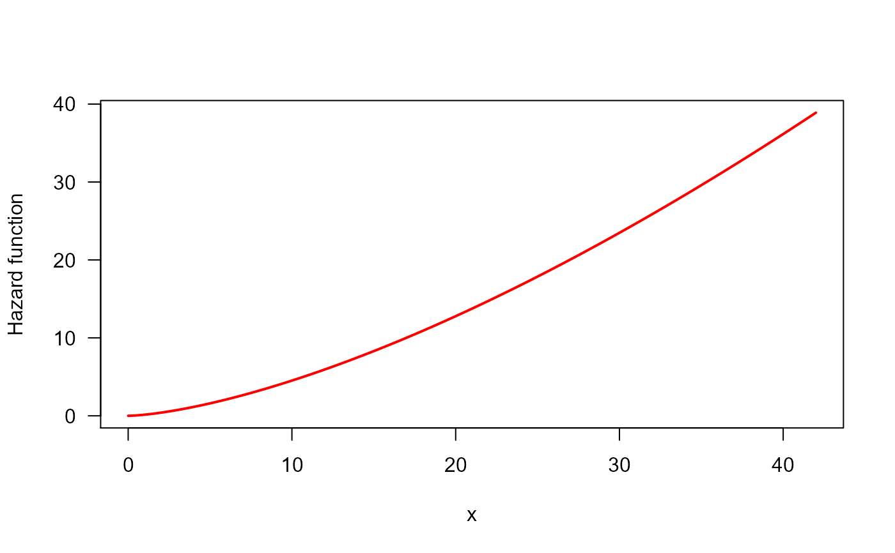

This function displays the estimated hazard shape given a data set.
Hazard_Shape(object)
| object | an object of class |
|---|
Jaime Mosquera Gutiérrez jmosquerag@unal.edu.co
#-------------------------------------------------------------------------------- # Example 1: Increasing hazard and its corresponding TTT plot with simulated data hweibull <- function(x, shape, scale){ dweibull(x, shape, scale)/pweibull(x, shape, scale, lower.tail = FALSE) } curve(hweibull(x, shape = 2.5, scale = pi), from = 0, to = 42, col = "red", ylab = "Hazard function", las = 1, lwd = 2)y <- rweibull(n = 50, shape = 2.5, scale = pi) my_initial_guess <- TTT_hazard_shape(formula = y ~ 1)#> Warning: Non-parametric estimate for Empirical TTT is irregular. #> Please, use the 'plot()' method to see the TTT shape and set the search region manually in 'gamlss()' if there is no conincidence between 'summary()' and 'plot()'. Visit 'OW distribution' vignette to get further information.Hazard_Shape(my_initial_guess)#> -------------------------------------------------------------------- #> Hazard shape: Increasing #> --------------------------------------------------------------------#> Warning: Non-parametric estimate for Empirical TTT is irregular. #> Please, use the 'plot()' method to see the TTT shape and set the search region manually in 'gamlss()' if there is no conincidence between 'summary()' and 'plot()'. Visit 'OW distribution' vignette to get further information.#--------------------------------------------------------------------------------